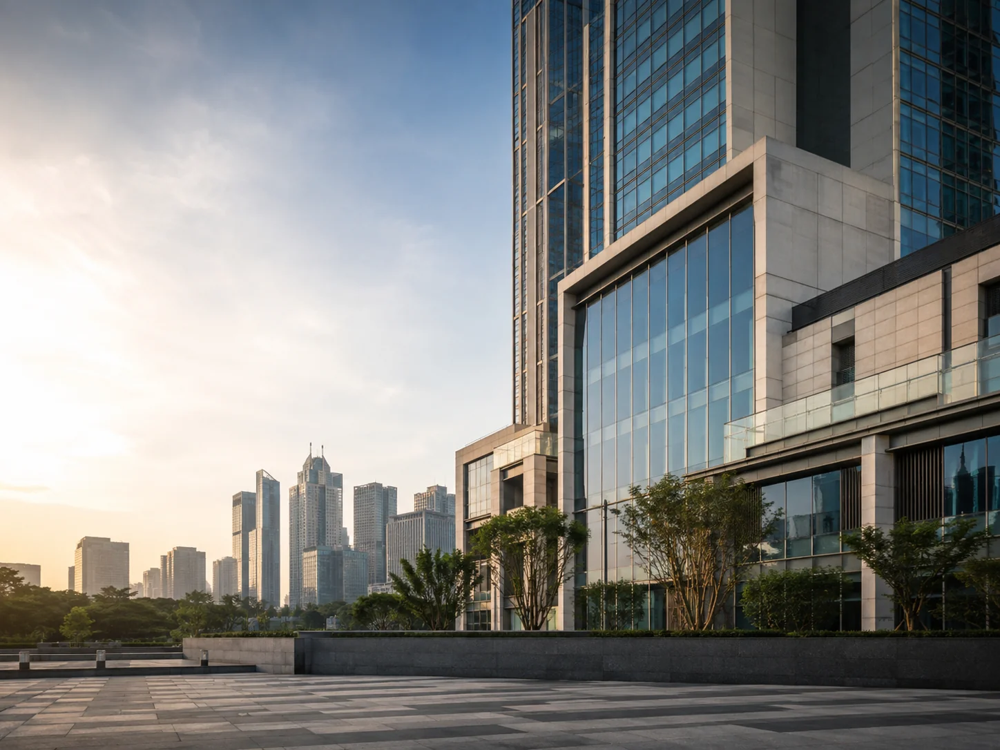

Pembangkit listrik
Cilegon
PT Krakatau Daya Listrik
2 × 120 MW · Gas
Portofolio perusahaan · hlm. 20
Penilaian aset, bisnis, dan proyek yang independen. Membantu perusahaan, lembaga keuangan, dan pemerintah mengambil keputusan dengan dasar yang jelas.
KJPP Rachmat MP & Rekan
Integritas dan Akurasi

Dari penilaian aset hingga kajian pemanfaatan barang milik daerah, setiap penugasan berangkat dari tujuan dan karakter objek Anda.
Seluruh layananTanah, bangunan, mesin, kendaraan, merek, hak kekayaan intelektual, dan hak kontraktual.
Harta berwujud & tidak berwujud ↗ 02Nilai bisnis dan proyek untuk transaksi, penyertaan modal, pembiayaan, serta keputusan investasi.
Analisis bisnis & investasi ↗ 03Financial advisory, monitoring pembiayaan, kajian BGS/BSG/KSP, dan penilaian penghapusan BMD.
Keuangan & pemanfaatan aset ↗KJPP Rachmat MP & Rekan berdiri berdasarkan Keputusan Menteri Keuangan No. 1216/KM.1/2009 tanggal 19 Oktober 2009, dengan Nomor Izin Usaha 2.09.0066.
Menjaga independensi dan objektivitas pada setiap penugasan.
Menyusun opini nilai melalui data, metodologi, dan analisis yang komprehensif.
Pengalaman pada energi, perkebunan, pertambangan, properti, industri, serta aset pemerintah dan BUMN.
Telusuri pengalamanPT Krakatau Daya Listrik
Penilaian pada sektor perkebunan kelapa sawit.
Kajian kontribusi kerja sama pengembangan dan pengelolaan untuk Pemerintah Kota Bogor.
Pilihan penugasan dari rekam jejak perusahaan.
Praktik penilaian berlandaskan Standar Penilaian Indonesia, Kode Etik Penilai Indonesia, serta perizinan dan registrasi profesi.
Perizinan & registrasiS.E., S.H., M.M., MAPPI (Cert.)
Berpengalaman di bidang penilaian sejak 1988. Memadukan latar belakang teknik, ekonomi, manajemen, dan hukum dalam memahami aset, bisnis, serta pemanfaatan aset negara dan daerah.
Kenali pendiriSampaikan objek, lokasi, tujuan, dan tenggat penugasan. Kami membantu menentukan ruang lingkup layanan yang sesuai.